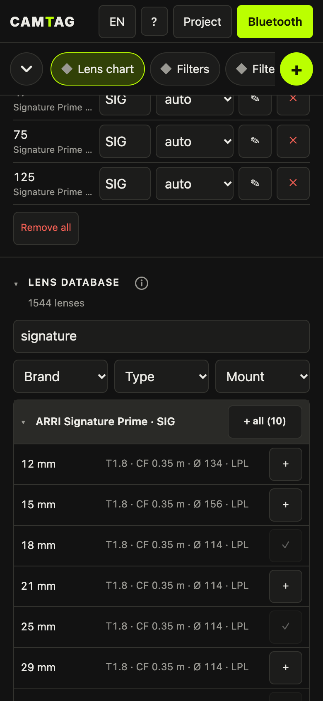
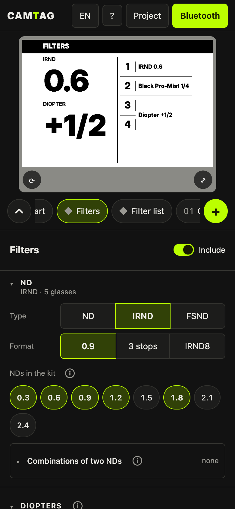
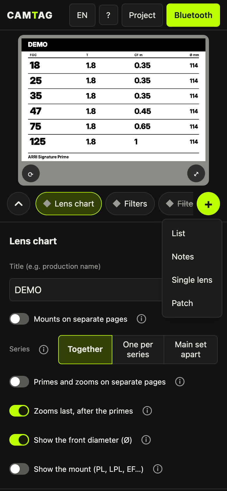
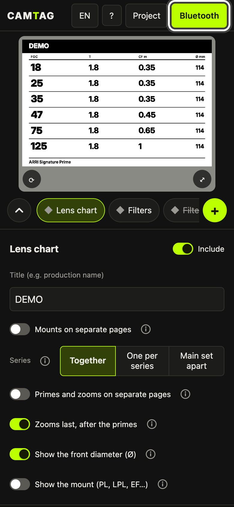
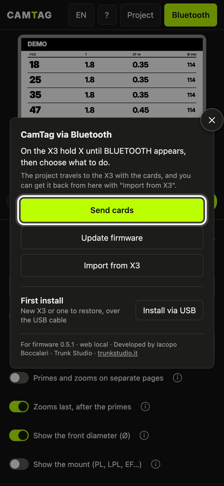
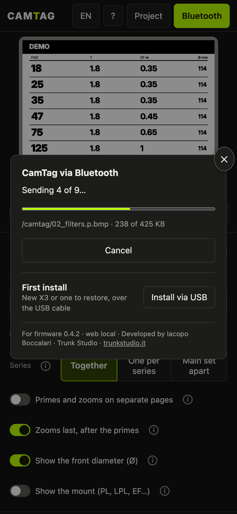
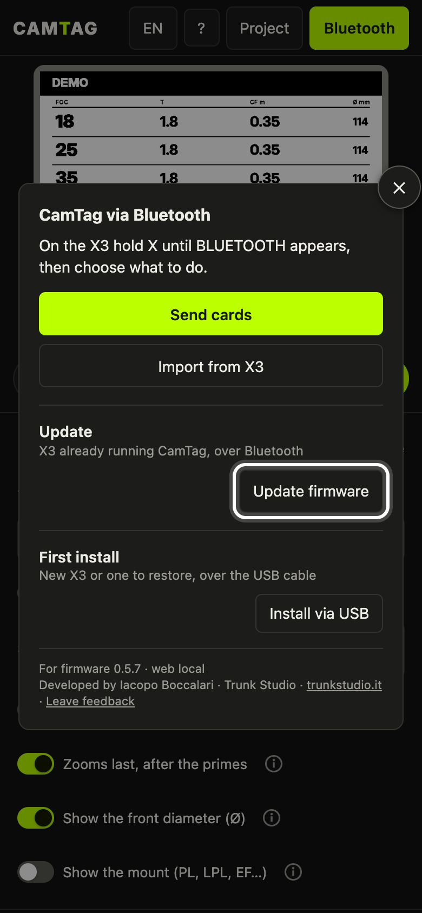
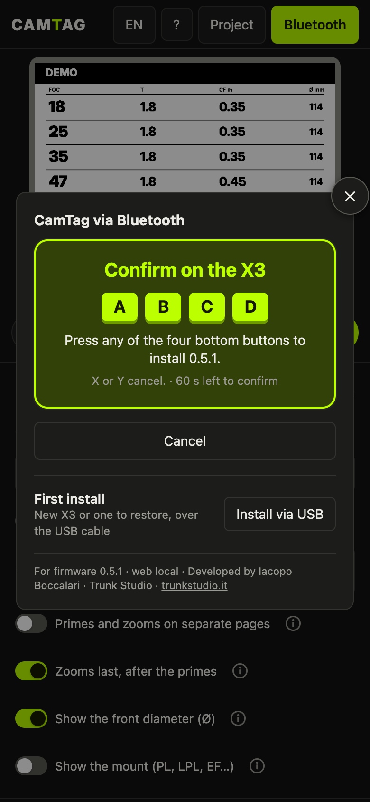

CamTag step by step
The e-paper badge for the camera department: lens chart, filters, crew and notes always in view, even when it's off. Here you'll find how to prepare the cards, the buttons, when to press them and what you'll see on the screen.
X and Y change the kind of screen (lenses, filters, notes…) and A–D page through it: from the lens chart to the filters is one press (Browsing the screens).
At a glance
Everything you need on set, on one page. The details are in the sections that follow.
XY Sides
- X
- previous kind of screen
- Y
- next kind
- X hold
- receive cards via Bluetooth
- Y hold
- lock / unlock rotation
PWR Power
- press
- lock / unlock the buttons
- hold 1 s
- turns off and on
A|BC|D Bottom
- lenses, notes…
- A|B page back, C|D page forward
- filters
- A|B diopter, C|D ND
- A or B hold
- edit the matte box stages
RESET Restart
- press
- restarts the X3 if it doesn't respond
Cards and settings are kept.
The buttons
The X3 is held upright, with the two rockers at the bottom. The button names refer to this position, even when you rotate it.
- Power, top right: locks the buttons, and a hold turns it off and on.
- Reset, top left: restarts.
- X on the left side and Y on the right: change the kind of screen (lenses, filters, notes…).
- Two rockers at the bottom, A|B on the left and C|D on the right: they work on the screen in front of you (pages of the same kind, ND and diopter).
You press a rocker one end at a time: A is the left end of the first one, B the right end.
Press or hold
Every button has two gestures. A short press counts when you release. A hold fires on its own after 0.8 seconds (1 second for power), with your finger still on the button: you see the effect right away, and releasing afterwards does nothing else.
| Button | Press | Hold |
|---|---|---|
| X | Previous kind of screen | Receive via Bluetooth |
| Y | Next kind of screen | Lock / unlock rotation |
| A B | Page back within the same kind. Filters: diopter − / + | Filters: edit the stages |
| C D | Page forward within the same kind. Filters: ND − / + | — |
| PWR | Lock / unlock the buttons | Turn off / on (1 s) |
| RESET | Restart | — |
Turning on and off
As far as you're concerned there are two states: on, which shows the cards and responds to the buttons, and off, which shows the off screen.
Hold power (1 second) to turn it off. To turn it back on, hold it again: it starts from the last card. When it's off, the other buttons do nothing.
You choose the off screen in the web configurator, on the Off page (an image and a caption, like "CAMERA A"), or with any card. Without one, the X3 shows just the CAMTAG name.
- after 24 hours without a button press;
- when the battery is empty: the strip reads BATTERY EMPTY - PLEASE CHARGE.
First start: the language
The first time it's turned on, the X3 asks which language to write its messages in (the no-cards box, the Bluetooth screen, the strip when it's off): A or B for English, C or D for Italian. The labels on the screen show where the buttons are. Until you choose, the question comes back every time it's turned on.
The cards have their own language, chosen in the web configurator, and the X3's language can be changed from there too (see Cards via Bluetooth).
When on, it uses little power even if you don't turn it off
After 5 seconds without a press the X3 goes to rest, but nothing changes from the outside: the card stays and the first button responds as always. There's no need to turn it off between setups.
When it's off, after three days the screen goes white with just the strip, and from then on the X3 uses no power at all. You always turn it back on by holding power.
Browsing the screens
The screens are grouped by kind: the lenses (the lens chart pages and the lens cards), the filters, the filter list, then notes, crew and images, in the order of the web configurator.
Y moves to the next kind, X goes back to the previous one, always landing on the first page of that kind: from the lens chart to the filters is one press, even with many lens pages. It loops: after the last kind it starts again from the first.
X and Y work the same way on every screen, including the lens chart and the filters.
Several pages of the same kind
A lens chart with many lenses is split into pages, and several notes or crew cards make a single kind. The rockers page through only the pages of the kind in front of you, in a loop, and each one acts as a single button: press either end, it's the same. Lens cards sit with the lenses, after the lens chart pages.
- A|B, on the left: page back;
- C|D, on the right: page forward.
With the X3 rotated, what counts is what you see: the rocker on the right or at the bottom goes forward, the one on the left or at the top goes back.
With a single page, A–D do nothing. On the filters they change diopter and ND: the filter list is a kind of its own, right after.
Rotation
The X3 senses how you hold it and turns the screen in all four directions, always upright for whoever is looking.
The change happens after about half a second in a steady position. Laid flat, the X3 keeps the orientation it had.
Hold Y to lock rotation in the current orientation; hold it again to unlock. ROTATION LOCKED or AUTO ROTATION appears for a moment. The lock stays even after turning it off.
With rotation locked, everything stays put: the screen, the button hints and what the rockers do all follow the locked orientation. When you unlock, the screen immediately catches up with the real position.
Locking the buttons
On the camera, buttons get bumped. The lock holds the screen in place until you release it.
Press power (short) to lock: the padlock appears at the top, under the power button. A–D, X and Y no longer do anything. Press power again to unlock.
Rotation keeps working with the buttons locked, and holding power turns it off as always. Turning it off removes the lock.
Check for the padlock: it's almost always the button lock.
Filter screen
ND and diopter in large type, and below them the matte box stages, from the lens side (1) toward the front. You change ND and diopter with the rockers, scrolling only through the glasses in your kit.
In portrait, A|B change the diopter and C|D the ND. The "+" is always on the right or top end as you look at it.
Each rocker controls the value next to it: when you rotate the X3 the two swap, and the hints on the screen follow.
The ND scale also includes totals made with two glasses, if you selected them in the web configurator: the pair takes stages 1 and 2.
What goes where in the stages
- The ND takes the first stages, from the lens side.
- The diopter sits in front of all the other glasses, usually across two stages.
- The other glasses (diffusion, polarizers…) sit in between.
The stages rearrange themselves when ND and diopter stay unchanged for 2 seconds: you can scroll through the values without the glasses jumping around at every press.
Editing the matte box stages
Swapped a glass on set? Update it from the X3, on the filter screen, without going through the phone.
- Hold A or B on the filter screen. The row of the first free stage turns negative.
- A and B move the selection between stages. The ND rows can't be selected.
- C and D change the glass in the stage: empty (—), then the glasses in the kit that aren't already in. When it reaches the end it starts over.
- Done. After 5 seconds without a press the edit is accepted and it exits by itself. To exit right away press X or Y, or hold A or B again.
- If you choose a glass on the diopter row, the glass takes that spot and the diopter moves forward by one.
- While editing, ND and diopter don't change, and X and Y only exit.
- The X3 remembers the stages, like ND and diopter, even when it's off.
Preparing the cards
You prepare the cards in the web configurator, a page that opens in the browser of your phone or computer, with nothing to install: trunk-studio-production.github.io/camtag. Here are the basics; every option has its explanation behind the ⓘ.
How it's laid out
- At the top, the preview: the screen as it will look on the X3. ⟳ turns it between landscape and portrait, ⤢ opens it full screen. On a phone it closes and reopens with the ⌃ arrow to the left of the strip, and it gets out of the way by itself when you scroll down the editor.
- Below it, the strip of screens: Lens chart, Filters, Filter list, the cards you add and Off. The order is the X3's, where screens are grouped by kind: X and Y move from one kind to the next, A–D page through it; struck-through screens aren't sent (turn them on with Include).
- Further down, the editor of the chosen screen.
- On a computer, next to Preview, there's the Simulator: try the buttons and the rotation as on the X3, before sending the cards.
First steps
- The lenses. Open Lens chart and type the title, usually the production name. In Lens database search for brand, series or focal length (for example “signature 35”), tap the series to see its focal lengths, then + for one lens or + all for the whole series. If the series comes in more than one mount, it asks which. Beyond 11 lenses the pages split by themselves.
- The filters. In Filters tick the NDs and diopters in your kit and add the other glasses from the Glass catalog. In Matte box and starting values choose how many stages the matte box has and what's mounted: on set you change it from the X3 (Filter screen, Editing the stages).
- The other cards. With + (on a phone, the green button at the start of the screens strip) add Crew, Notes, Single lens or Patch, an image such as a logo or a QR code. Reorder them with ↑ and ↓ at the top of the editor.
- When it's off. In Off choose what stays on the screen when you turn the X3 off: some text (a name, a contact) or an image.
- Send the cards to the X3 with Bluetooth, as the next section explains.



The web configurator saves by itself, but only in this browser. To keep a copy use Project ▾ › Save project, which downloads a file to reopen with Import project…. The project also travels with the cards: you get it back from the X3 with Bluetooth → Import from X3.
Languages
In the web configurator's toolbar, the language button (EN or IT) sets three separate things: the language of the web configurator, the one the cards are drawn in, and the one for the X3 messages. The last one reaches the X3 with the next card upload; with Don't change the X3 keeps the one chosen at first start. Cards and X3 in different languages are fine: sending works anyway.
Sending cards via Bluetooth
Once the cards are ready in the web configurator, they reach the X3 from your phone or computer, without removing the microSD.
- On the X3, hold X: BLUETOOTH appears with the device name (for example CAMTAG-1A2B).
- In the web configurator tap Bluetooth, then Send cards, and choose that name.
- When the transfer is done, the X3 shows the first card with CARDS UPDATED.



The new cards replace the old ones only once the transfer is complete: if the connection drops, the previous cards stay on the X3. Cards identical to those already on the X3 aren't sent again, so a small tweak arrives in a few seconds. X or Y exit receiving; after 3 minutes without a transfer it exits by itself.
Getting the project back from the X3
The web configurator project travels along with the cards. On another phone, or if the browser has lost your work, put the X3 in receive mode and tap Bluetooth → Import from X3: the web configurator gets the project back and the cards on the X3 don't change.
- Android, Mac, Windows, Linux: Chrome or Edge. In Brave, Bluetooth has to be enabled in
brave://flags. - iPhone and iPad: Safari doesn't offer Bluetooth to web pages. You need a browser that adds it, such as BLE Link or Bluefy (App Store).
- The page has to be opened from the web configurator's https:// address.
Updating the firmware
- Put the X3 in receive mode (hold X). Its version is written at the bottom of the BLUETOOTH screen; when you connect, the web configurator tells you if there's a newer one.
- In the web configurator tap Bluetooth, then Update firmware, and choose the X3's name.
- The X3 shows UPDATE THE FIRMWARE?: press A, B, C or D to install, X or Y to cancel.
- Keep the phone close to the X3 for about half a minute. At the end the X3 restarts with the new firmware.


Cards, project and settings are kept. If you don't confirm within a minute the X3 cancels by itself, and with the battery below 30% it refuses the update: charge it first. If the connection drops halfway, or the new firmware doesn't start, the X3 goes back to the previous one by itself.
It works from 0.4.0 onwards: an X3 with older firmware has to be updated once with the USB cable, as the README explains.
With the microSD
Alternatively, download the zip from the web configurator (Project ▾ › Download cards (.zip)) and copy its camtag/ folder to the root of the microSD, replacing the one that's there.
Messages and status
When there's no card to show, the X3 says so in a box in the middle of the screen.
| Message | What to do |
|---|---|
| NO CARDS | Hold X and send them via Bluetooth. |
| NO MICROSD | Insert the microSD and press Reset. |
| INVALID BMP | A card is damaged: send them again from the web configurator. |
| CARDS UPDATED | Transfer succeeded, nothing to do. |
| BATTERY EMPTY | It turned off because of the battery: put it on charge. |
With the X3 set to Italian the same messages are in Italian: NESSUNA CARD, NESSUNA MICROSD, BMP NON VALIDO, CARD AGGIORNATE, BATTERIA SCARICA.
Battery and cable
At the top right, over the card, the X3 shows its status only when needed:
- ▭ 15% the battery, when it drops below 20% or is charging;
- ϟ the lightning bolt, while charging;
- USB the USB tab, when it's connected to a computer.
When it's off, the remaining percentage is on the off screen. Charging stops by itself when the battery is full.
If something goes wrong
| What happens… | Try this |
|---|---|
| The buttons do nothing | Is the padlock there? Press power. If it shows the off screen, turn it on by holding power (1 s). |
| The screen doesn't rotate | Rotation is locked: unlock it by holding Y. |
| A–D do nothing | That's normal when the kind has a single page (on the filters they change diopter and ND, if the kit has them). |
| The phone can't find the X3 | Put the X3 in receive mode (hold X) before tapping "Send cards", and use a browser with Bluetooth. |
| The firmware update doesn't start | The X3 has to be in receive mode and the battery above 30% (or charging). Confirm on the X3 with A, B, C or D within a minute. |
| It asks for the language when turned on | It does until you choose one: A or B for English, C or D for Italian. |
| The X3 shows the wrong language | In the web configurator: EN/IT button → X3 messages, choose the language and send the cards again. |
| It doesn't respond at all | Press Reset, at the top left. The cards are kept. |